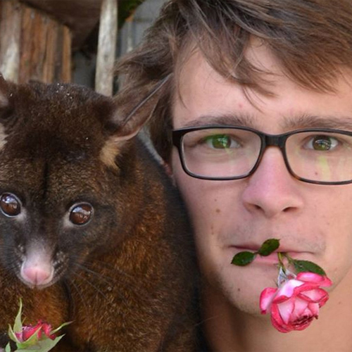

Jeudy Valentin
Poste/mission : Intégrateur front-end
Entreprise : Net production Köbe and co
Lieu : Lausanne, Suisse
Contacter l'étudiantPoste/mission : Intégrateur front-end
Entreprise : Net production Köbe and co
Lieu : Lausanne, Suisse
Contacter l'étudiant
Privé.
Société en nom collectif.
Jeune entreprise répondant à des commandes de site Web et développant ses propres projets de conception.
Du 6 avril au 31 juillet 2015
Intégration du front-end du projet de la plateforme Caméléon, mettant en relation professeurs et étudiants. Conseils et participation aux différents choix inhérents à ce projet.
Face à l’ampleur du travail que nécessitait le développement de la plateforme de mise en relation des professeurs et des étudiants, la société a fait appel à un intégrateur front-end sur ce projet en particulier ainsi que sur d’autres projets de Net production.
Augmenter la notoriété de Netproduction grâce à la popularité du projet, répondre à un besoin croissant en Suisse, mais également créer des revenus via les abonnements payants.
Concevoir la plateforme en prenant en compte le fait que les informations propres aux différents utilisateurs ne seraient pas les mêmes. Respecter l'identité graphique ainsi que les différentes contraintes techniques. Utiliser les outils de mise en relation des différents collaborateurs, de mise en commun du code via Slack, Bitbucket, Asana.
Possibilité d’effectuer des modifications sur les maquettes pour s’adapter à certaines contraintes du web. Intervenir et donner son avis concernant les différents aspects du développement du projet et de la stratégie de communication.
Conception de l’intégration front-end de Caméléon, comprenant des pages de profils étudiant/professeur, messagerie, recherche des différents cours disponibles, inscriptions en ligne.
Voir la réalisationOui.
La plateforme Caméléon est prête mais n’est pas en ligne. Ma partie du travail est finie et a été peaufinée. Cela étant dû à une stratégie de mise en ligne.
Mon équipe semblait satisfaite du travail fourni, de mon implication et de mes conseils, malgré mon niveau débutant sur le plan technique.
Je suis satisfait dans l’ensemble. Je suis cependant déçu d’avoir perdu du temps faute d’organisation.
Développement de mes compétences en HTML/CSS. Découverte et utilisation de versioning via Git et Bitbucket. Mise en situation au sein d’un véritable projet web.
Prendre plus de temps avant de me lancer dans la technique pour prendre en compte tous les éléments techniques et fonctionnalités, particulièrement sur un projet de cette ampleur.
Utilisation d’outils propres à la gestion de projet et au développement web (Asana, Git, Bitbucket...) et… du code!
{kind=link}